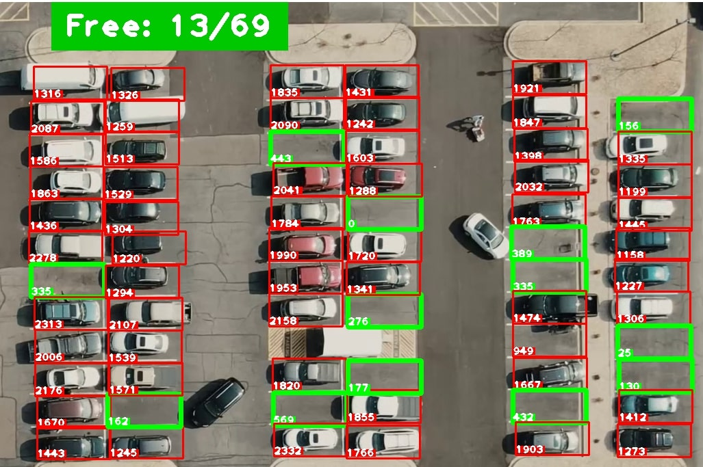

This project focuses on performing a comprehensive analysis of customer churn in a bank using machine learning techniques. By employing decision trees, random forest, and XGBoost algorithms, we aim to predict customer churn and gain valuable insights to help the bank retain its customers effectively.

This EDA project on FRED API involves exploring and analyzing economic data using the Federal Reserve Economic Data (FRED) API. This project aims to extract relevant economic data from FRED API using Python and conduct exploratory data analysis to identify patterns and gain insights.
This NLPTK project is aimed at classifying reviews using natural language processing techniques. By analyzing the language used in reviews, the project can determine whether they are positive, negative, or neutral in sentiment.

this machine learning project involves dividing a company's customer base into distinct groups with similar characteristics, behaviors, and needs. This project aims to help businesses understand their customers better and tailor their marketing strategies and product offerings to each segment's specific requirements

This project involves creating interactive and informative visual representations of complex data sets. In addition, I have experience working with Net Promoter Score (NPS) data, a key metric used by businesses to measure customer satisfaction and loyalty.